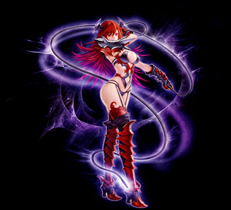

| アンタッチャブルボンテージ |
|  |
| クィーンズプライド |
|
<情報>
<持続時間>
- 力10増加
- 攻撃速度増加 10％
<説明>
- 周りに移動速度が減少した敵が多ければ多いほど女王様の威厳が高まり、自身の力と攻撃速度が上昇する。
<補足>
周囲の移動速度低下にかかった敵1体につき、力10と攻撃速度10％増加。(最大5体適用)
敵数の判定周期5秒 |
<スキルタイプ>
専用パッシブスキル |
<前提スキル>
- なし |
<パワーアップ形態>
- なし |
| ナインテールブレイズ |
 |
<情報>
- スキル難易度 4
- 必要CP 60
- 消費CP [n]
- 獲得CP [n]
- 敵の攻撃無視
- [n]〜[n]の 火ダメージを [8~12]回 受ける。
<攻撃関連>
- ◆ 物理ダメージ [n]~[n]
- 攻撃速度 武器速度
<説明>
- 強烈な地獄の業火に包まれた鞭で攻撃する。地獄の業火は一定回数にわたってダメージを与え続ける。従来よりダメージとCP獲得量が増加。 |
<スキルタイプ>
専用強化スキル |
<前提スキル>
- バインドブレイズ Lv50 |
<パワーアップ形態>
- 威力, 命中率, 攻撃回数 |
| スキルLv |
1（+0） |
1（+1） |
1（+2） |
1（+3） |
1（+4） |
1（+5） |
| 消費CP |
265 |
270 |
275 |
280 |
285 |
290 |
| 獲得CP |
100 |
103 |
106 |
109 |
112 |
125 |
| 物理ダメージ（％） |
300 |
309 |
318 |
327 |
336 |
345 |
| 火ダメージ |
170〜190 |
173〜193 |
176〜196 |
179〜199 |
182〜202 |
185〜205 |
| 命中率（％） |
5 |
5.1 |
5.2 |
5.3 |
5.4 |
5.5 |
| 攻撃回数 [Max12] |
8 |
8 |
8 |
8 |
8 |
8 |
| ダイナマイトボディ |
|
<情報>
- スキル難易度 1
- 必要CP 0
- 消費CP 5
- 獲得CP [n]
- 60秒の間維持される体力[n],防御力[n]の妨害物を生成する。
<攻撃関連>
- ◆ 物理ダメージ [n]~[n]
- 攻撃速度 武器速度
<説明>
- 鞭で遠い所にいる敵をからめて自分の前まで連れてくる。的中すると敵にワームバイト効果をかける。 |
<スキルタイプ>
強化スキル |
<前提スキル>
- ドローボディー Lv50 |
<パワーアップ形態>
- 威力, 命中 |
| スキルLv |
1（+0） |
1（+1） |
1（+2） |
1（+3） |
1（+4） |
1（+5） |
| 消費CP |
5 |
| 獲得CP |
50 |
51 |
52 |
53 |
54 |
55 |
| 物理ダメージ（％） |
50 |
51 |
52 |
53 |
54 |
55 |
| 命中率（％） |
10 |
10.2 |
10.4 |
10.6 |
10.8 |
11 |
| 成功確率（％） |
55 |
55.8 |
56.6 |
57.4 |
58.2 |
59 |
| 射程距離（m） |
武器射程×300％ |
| スパイダーペイン |
|
<情報>
- スキル難易度 4
- 必要CP 0
- 10秒当たり消費CP [n]
<説明>
- 自分の周囲の一定地域に移動を抑止する蜘蛛の糸を撒き散らす。自分が攻撃されなくても効果は発動する。 |
<スキルタイプ>
強化スキル |
<前提スキル>
- スパイダーウェブ Lv50 |
<パワーアップ形態>
- 範囲, 持続時間, 発動確率 |
| スキルLv |
1（+0） |
1（+1） |
1（+2） |
1（+3） |
1（+4） |
1（+5） |
| 消費CP |
20 |
24 |
28 |
32 |
36 |
40 |
| 効果範囲（m） |
1.85 |
1.9 |
1.95 |
2 |
2.05 |
2.1 |
| 持続時間（秒） |
5.1 |
5.2 |
5.3 |
5.4 |
5.5 |
5.6 |
| 発動確率（％） |
100 |
| 発動周期（秒） |
10 |